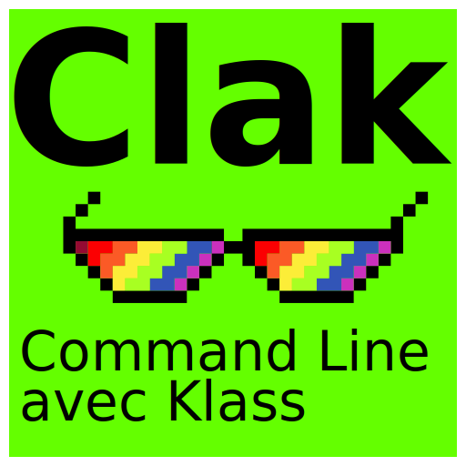

Clak

Clak (Command Line avec Klass) is a Python library that simplifies the creation of complex command-line interfaces using a class-based approach. It extends Python's argparse to provide an elegant and maintainable way to define nested commands and arguments.
Features
- Hierarchical command based structure built with python class. No need to learn a new framewok, just use Python!
- Easy to use, easy to extend, easy to understand. Focus on your app, not your CLI.
- Based on Python Argparser. All what your learned is still useful, you wont be lost as it follows the same syntax.
- Light and minimalistic, while providing standard features via optional components.
- 🎯 Class-based command-line interface definition
- 🌳 Easy nested subcommand creation
- 🔄 Automatic help formatting with command tree display
- 🎨 Clean and intuitive API for defining arguments
- 📦 Inheritance-based command organization
- 🚀 Built on top of Python's standard
argparse
Requirements
- Python 3.9 or higher
- argparse (built into Python)
Quick Start
Add clak to your project dependecies:
Here's a simple example showing how to create a simple git-like command structure:
```python demo.py from clak import Parser, Argument, Command
class ShowCommand(Parser): target = Argument('--target', '-t', help='Target to show') format = Argument('--format', choices=['json', 'text'], help='Output format')
class MainApp(Parser): debug = Argument('--debug', action='store_true', help='Enable debug mode') config = Argument('--config', '-c', help='Config file path')
# Define subcommands
show = Command(ShowCommand, help='Show something', choices=['phone', 'email', 'address'])
Instanciate your app, parse command line and run appropiate command.
MainApp().dispatch()
This will create a CLI with the following structure:
```bash
$ python demo.py --help
myapp [-h] [--debug] [--config CONFIG] {show} ...
show [-h] [--target TARGET] [--format {json,text}]
Key Concepts
Arguments
Define arguments using the Argument class:
class MyCommand(ArgumentParserPlus):
# As class attributes
verbose = Argument('-v', '--verbose', action='store_true', help='Verbose output')
# Or in __cli__dict__
__cli__dict__ = {
'output': Argument('--output', '-o', help='Output file')
}
Nested Commands
Create complex command hierarchies using the Command class:
class MainApp(ArgumentParserPlus):
# As class attributes
status = Command(StatusCommand, help='Show status')
# Or in __cli__dict__
__cli__dict__ = {
'config': Command(ConfigCommand, help='Configure settings')
}
Advanced Usage
Check the examples/ directory in the source code for more complex examples including:
- Multi-level command nesting
- Argument inheritance
- Custom help formatting
- Command grouping
TODO
Implementation:
- Use more argparse plugins mechanisms
Features:
- Add support for
argcomplete - Add support for argparse Argument groups
- Add support for intermixed arguments
- Add support for
fire
Contributing
From reporting a bug to submitting a pull request: every contribution is appreciated and welcome. Report bugs, ask questions and request features using Github issues. If you want to contribute to the code of this project, please read the Contribution Guidelines.
License
This project is licensed under the GPL v3 License.